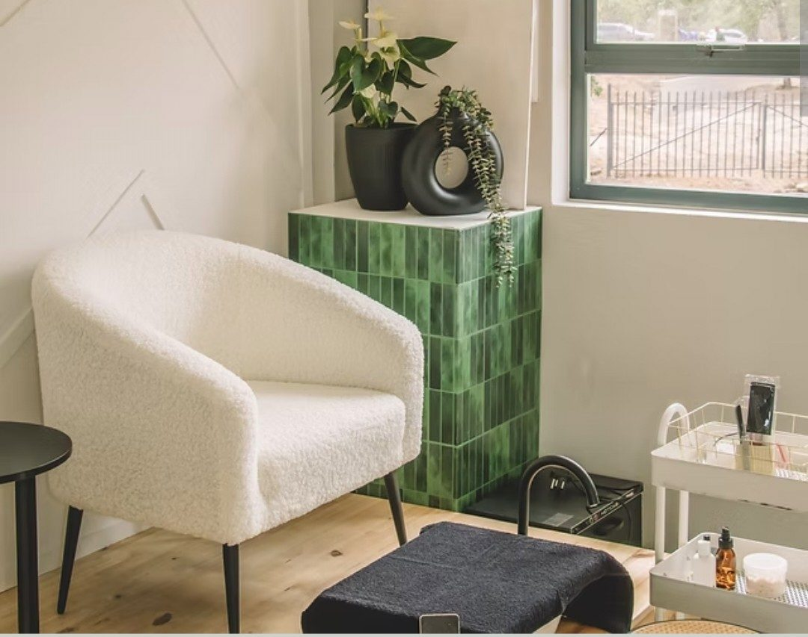
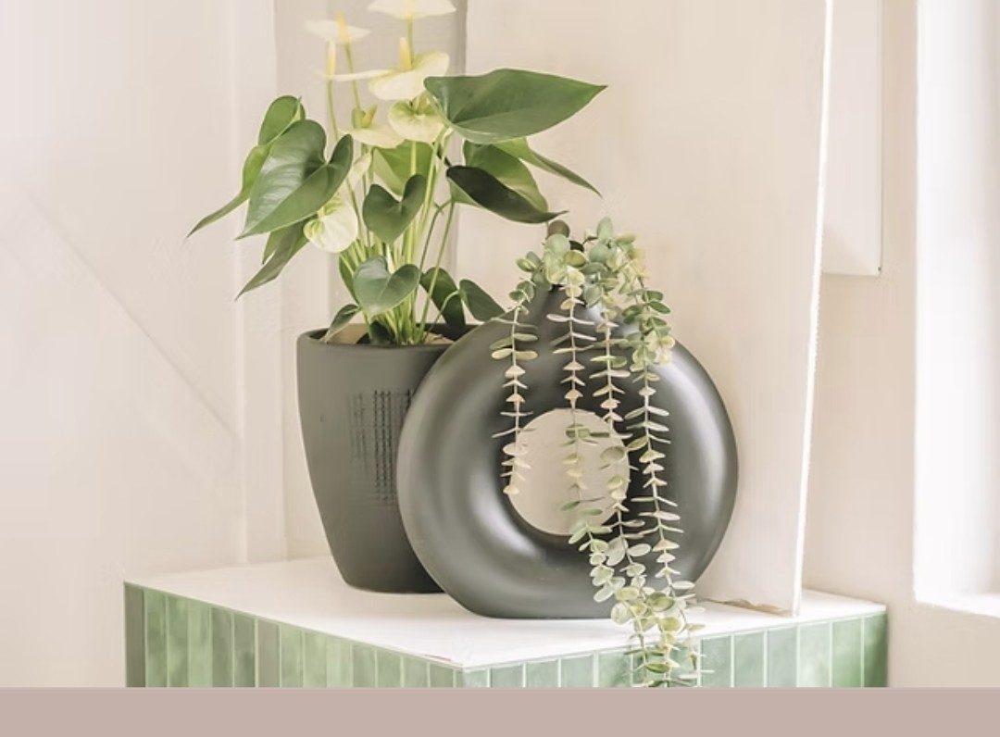
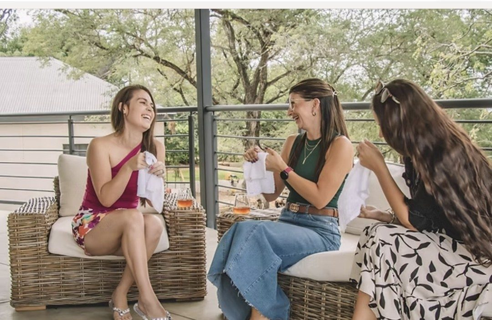

Two summers,
one sanctuary.
Hoedspruit is known for its two summers. African Summer Spa was built to bring the same warmth indoors — a calm, considered space for body, facial and medical aesthetic care.

Our most restorative offerings
Massage & Bodywork
Slow, restorative bodywork designed to end a busy week — a treatment that encourages a healing response deep within the body's system.
Explore treatmentFacials
Relaxing, therapeutic and invigorating facials that fit into any busy schedule and leave your skin revived, rejuvenated and centred.
Explore treatmentWith Dr. Caymare
Anti-ageing injections, fillers, skin boosters and skin tag removal, delivered with a clinical eye and a warm, human approach.
Explore treatmentTrading Hours
Tuesday – Saturday
08:00 – 17:00
Find Us
Hoedspruit Private Hospital
Medical Centre, North · Unit 2
Book a Treatment
082 370 9845
By appointment only

A spa built around Hoedspruit's breathtaking nature
African Summer Spa was created to showcase the wildlife and stillness of the Lowveld, delivering unparalleled service in an unforgettable setting. Under current owner Biancé Janse van Vuuren, a Hoedspruit local, the spa continues to share her passion for health and wellness with every guest.
Our StoryEscape the hustle, embrace ultimate relaxation
African Summer Spa is the perfect place to step away from everyday life. Come alone, or bring your favourite people.

Warm, professional service — booking and payment were refreshingly easy.
Axel KuhnThe massage was worth every cent — spacious, modern and deeply restorative.
Pshiri PetjaA relaxing experience with professional staff and reasonably priced treatments.
Richard Grove